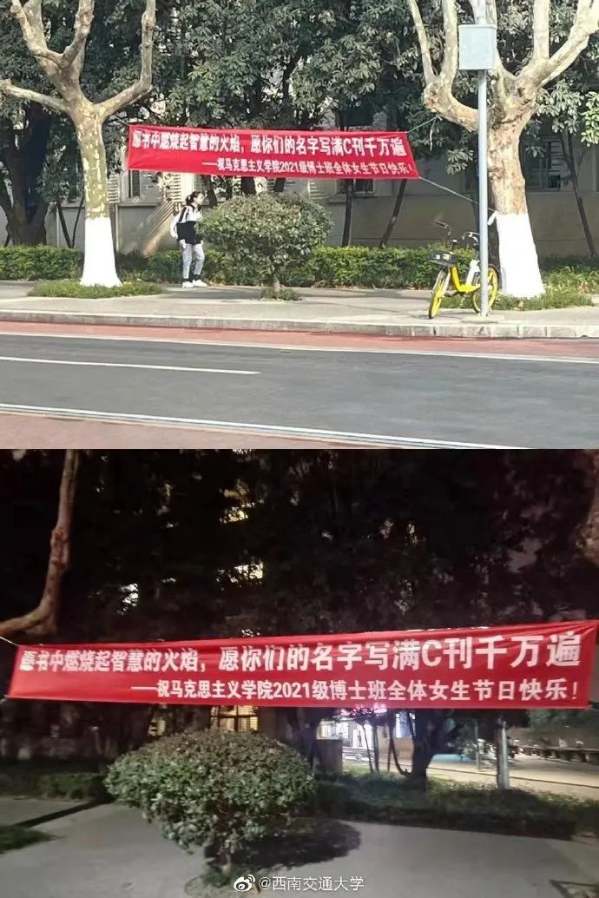
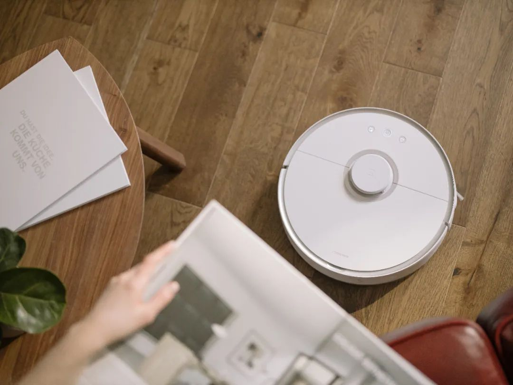
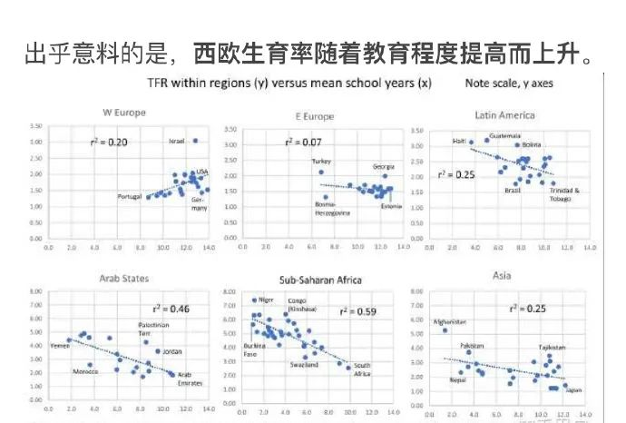
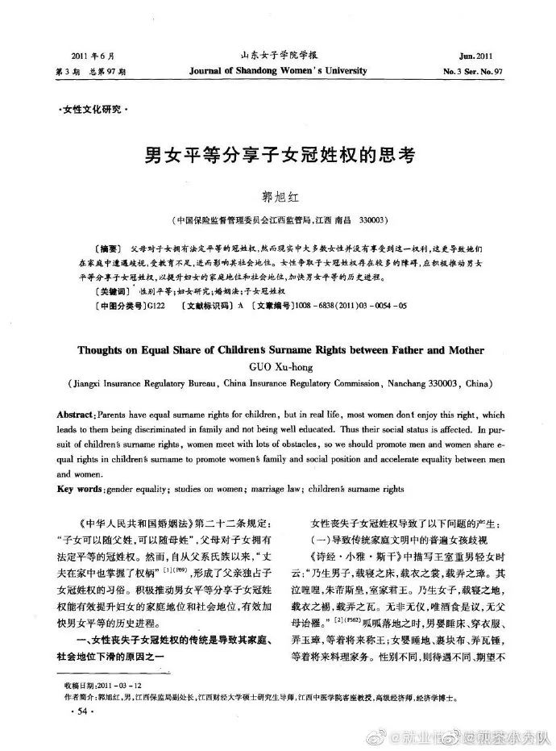
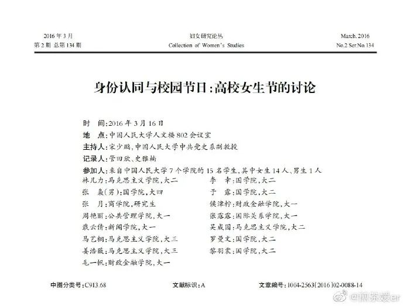
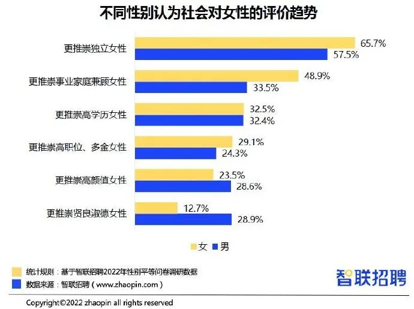
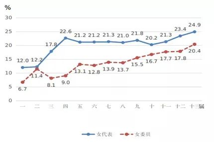
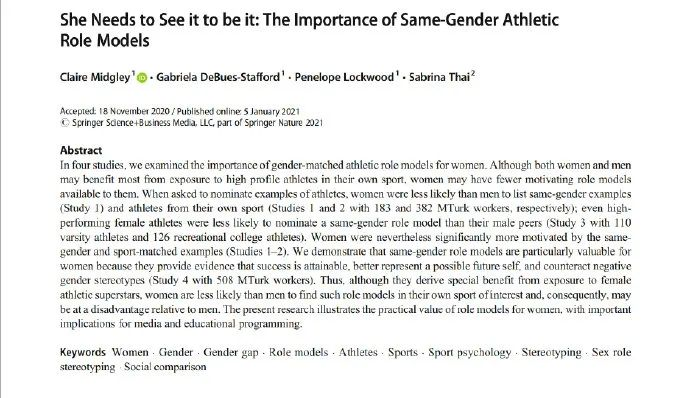

热点2022年3月|国际妇女节：性别平等共创可持续未来

编辑：paper；数据支持：闪闪。
1.如果非要过女生节，那么......
#妇女节# 西南交通大学的姐妹：投稿一个我们学校马院的横幅，至少祝福是关于学术的

2.女性的压抑与困境:家庭主妇
#全职太太接手丈夫公司7年扩大一倍#【女性的压抑与困境：“家庭主妇”】
对于男主外，女主内这种婚姻模式，我们并不陌生。旧时妇女被束缚在家庭内部，没有工作的权利，全身心相夫教子，虽然付出很多，却因为要靠男人供养，与小人并列，无法得到社会的尊重。新中国成立后，妇女走出家门，走上社会大舞台，挺直腰杆当家做主，展现半边天的价值，成为男女平等的重要标志。
岁月蹉跎，不知从何时起，一些妇女由于各种原因不再工作，某些高学历、高素质的年轻白领，婚后回归家庭，暂时或永远地结束了杜拉拉的日子。这种全职太太的生活被描述为：工薪阶层，家境小康，有一到两个低龄小孩，全家每年至少安排一次长途旅游，每周去一次沃尔玛、麦德隆之类的大超市，偶尔花大价钱买有机蔬菜和有机肉......

3.江苏近7成读过大学的女性只生一孩
#江苏近7成读过大学的女性只生一孩#【受教育程度和生育率并没有直接的负相关关系】
这个tag的媒体小编认识水平堪忧，生育率低下的直接原因是女性生育保障不到位，其余因素如房价、教育程度等均为间接影响因素，并不构成因果关系，不能甩锅给女性受教育水平。我国女性教育程度越高生孩子越少是各类因素结果的体现，而不是原因。
比如西欧是教育水平越高生育率随之越高，主要原因是教育水平提升的同时，生育保障也是跟上的。冰岛则是疫情期间在生育保障进一步提高后出现了高知女性婴儿潮。#北欧逆势迎来婴儿潮挤爆产房##2021年二季度冰岛出生人口增加16.5%#
法国女性的平均学历高于我国，但总和生育率排名欧洲第一，在2010年高达2.03，近年也在1.8以上，远远高于我国1.3的总和生育率。
法国能维持高生育率的政策是十分昂贵的。鼓励生育政策可以分为：现金补贴、税收减免、产假 、育儿福利几大类。现金补贴是最为直接，也是最简单易行的办法。据联合国一项统计（The influence of family policies on fertility in France ），早在2009年，法国政府财政中花在鼓励生育方面的金额就已高达GDP的4%，是其军费的两倍。
总之一句话：生育率低下是因为生育保障不到位，而不是因为女性受教育。@第一财经 @江苏统计

4.妇女节：给商家的一点建议
#妇女节 放假# 给商家一点建议：
广大妇女希望看到的是更多企业承担起社会责任，共同在妇女节这一天为女性权益贡献一点力量，比如助学女童、捐卫生巾等等
而不是单纯趁机做一波卖货活动
5.我国法律也规定了随母姓
#夫妻二人因2胎姓氏起诉离婚#【我国虽然法律规定可以随母姓，但实际上以随父姓优先为主，女性争取冠姓权面对重重阻碍】
《中华人民共和国婚姻法》第二十二条规定：“子女可以随父姓，可以随母姓”，父母对子女拥有法定平等的冠姓权。然而，自从父系氏族以来，“丈夫在家中也掌握了权柄”，形成了父亲独占子女冠姓权的习俗。积极推动男女平等分享子女冠姓权能有效提升妇女的家庭地位和社会地位，有效加快男女平等的历史进程。

6.身份认同与校园节日：高校女生节的讨论
科普| 身份认同与校园节日：高校女生节的讨论
女大学生对于女生节与妇女节的不同态度，最直接的根源在于她们的自我身份的认同，以及女生 / 女性与妇女 / 女人的切割。制造认同区隔的有年龄、婚姻、阶级、性魅力，还有传统 /现代的想象。当我们打算批评大学女生狭窄化的主体身份认同时，千万不要忘了她们只是“妇女”群体解体、市场社会制造碎片化主体的历史结果。
在集体主义生产方式解体之后，“妇女”作为一个群体失去了建构实存的政治经济基础，“妇女”逐渐演化成一种性化与性别化的身份，但还带有集体主义时期历史遗留的劳动阶级的文化身份。性化的身份是以“性”本体为基础的独立实存的身份，性别化的身份是从传统延续下来、以家庭关系为主确立的身份。劳动阶级的文化身份在市场社会中又遭遇贬抑与污名化。
当年轻的大学女生拒绝性别化与阶级化的社会关系制造的身份时，性化的身份就成为了女性唯一可以接受的“纯真”主体。她们认同自己是独立自主的现代知识女性，拒绝成为背负传统性别包袱的旧式女人，当然，这里还有阶层的幻想，把自己与底层劳动妇女切割。更深层的不能名状的潜意识是她们已清楚地意识到，女性仍无法摆脱与婚姻 / 家庭之间宿命般的联系。
对于大学女生而言，如果说“妇女”还有底层阶层的意味，那么，“女人”意味着进入了与男人的社会关系中，“好女人”意味着与家庭责任的联结。

7.女生学不好数学？是偏见！
科普 | 【女生学不好数学，是偏见还是事实？男生和女生相比，到底谁的数学成绩更好？】
男孩女孩学习能力的对比几乎成了一种智商的对比，女孩天生学不好数学成了老师、家长强加在女孩身上的刻板印象。这样的刻板印象并不只是中国家长有，在美国也一样，似乎从女孩和男孩一起上学接受现代教育的那天起，女孩就被认为“她们学不好数学”。事实真的如此吗？
让我们先来看看第一个问题，男生和女生相比，到底谁的数学成绩更好？
2008年，著名心理学家Hyde和她的研究者们在《科学》杂志上发表了一篇文章，关于“男女生数学成绩的对比”。
他们回顾以往的研究发现：1970-1980年间，男生在高中阶段的解决复杂数学问题上表现优于女生，但这是因为当时女生在高中选修的高级数学课程比男生少。但是，到2000年的时候，高中女生已经和男生一样以相同的比例选修高级数学课程。他们根据近年来美国不同州2-11年级学生的数学成绩数据做了分析：
根据这些数据，他们发现男女生不分年级高低数学成绩没有差异，不同种族的男女生数学成绩同样也没有差异。那些说女生越大就越学不好数学的人，可以回去面壁了。这样看来，美国的男女生数学成绩是持平的。
8.职场报告：榜样力量提升女性信心
资讯 |【智联招聘《2022中国女性职场现状调查报告》：榜样力量提升女性信心，职场人相信性别平等会向好发展】
（报告正文共四部分，以下为第四部分）
四、榜样力量提升女性信心，职场人相信性别平等会向好发展
65.7%的女性认为社会更推崇独立女性，占比高于男性。
智联招聘数据显示，65.7%的女性认为当今社会更推崇独立女性，占比排名第一，其次是事业家庭兼顾的女性，占比48.9%，选择这两项的女性受访者占比均高于男性。而男性选择“更推崇贤良淑德女性”的占比达到28.9%，明显高于女性的12.7%。可见，虽然独立女性受到推崇是共识，但受到传统观念影响，相比女性，男性依然会对女性的“贤淑”品德更关注。

9.人少力量大：“弯道超车”的女性人大代表
科普 | 【人少力量大：“弯道超车” 的女性人大代表】
据《中国妇女发展纲要（2021-2030）》数据显示，全国女人大代表和女政协委员占比均达历史最高。2018年召开的第十三届全国人民代表大会共有女代表742名，占代表总数的24.9%，比第十一届（2008年）提高3.6个百分点，是历届人大代表中女性比重最高的一届。政协第十三届（2018年）全国委员会中有女委员440人，占委员总数的20.4%，比第十一届（2008年）提高2.7个百分点，也是历届政协委员中女性比重最高的一届。虽然女性代表和委员比例在逐渐增大，差距却依然较大。
不过，与此成反比的，则是女性代表更为优秀的表现。分享对外经贸大学冯昕瑞老师、宾夕法尼亚大学侯越老师及北京大学刘明兴老师合作的一篇工作论文 “Underrepresented Outperformers Female Legislators in the Chinese Congress”。该研究关注立法机关中 “代表性不足但表现更优” 的女性人大代表们，探讨威权主义制度背景下妇女在政治参与中实质代表权的实现。

10.让她看见，让她成为——女性运动员的榜样作用
科普 |【让她看见，让她成为——女性运动员的榜样作用】
1. 当被要求提名运动员偶像时，女性能想到的同性别榜样更少。
2.同性别榜样对女性来说更有价值，因为她们证明了成功是可以实现的，更好地代表了未来可能的自我，并抵消了负面的性别刻板印象。在职业领域，接触反性别刻板印象的例子，会减少人们对固定的性别角色分工的坚持。
3.在体育运动中缺乏女性教练和领导，这意味着与年轻男孩相比，年轻女孩很少有机会接触到同性别的体育导师。她们除了提供直接的支持和建议外，还能以身作则，示范女性在男性主导的领域中的成功。
4.体育报道中女性运动员的缺位也会加深人们的刻板印象，认为女性的成就不如男性。由于这种报道上的差异，更多的男性运动员被公众所熟知，他们的名字也更容易被记住。



图片来源于网络，侵权删除。